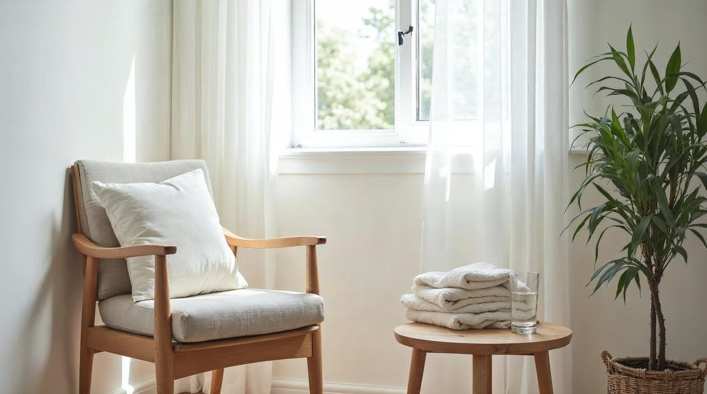
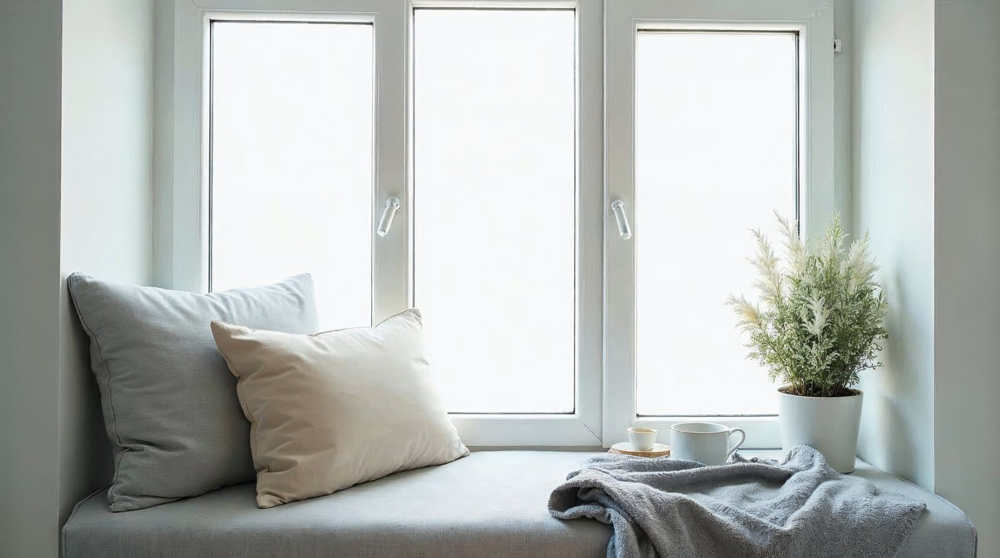
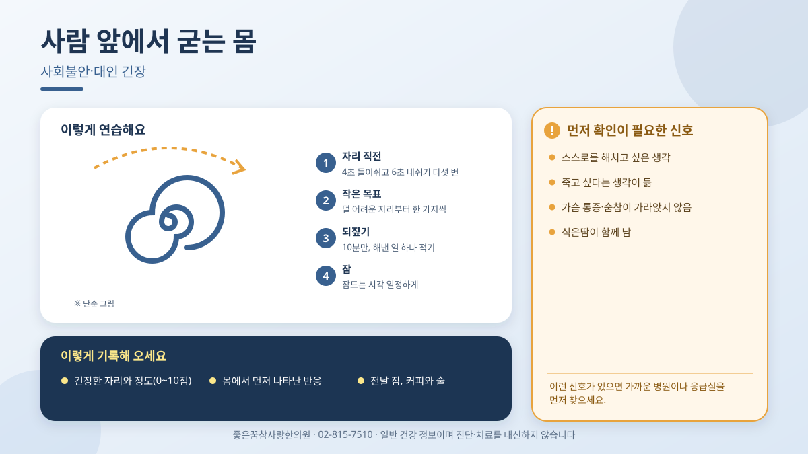

이종호 한의사 감수좋은꿈참사랑한의원 대표원장 (한의사 면허번호 19769)발행 2026-11-26 · 수정 2026-11-27
이 글의 차례
엘리베이터 문이 열리고 같은 층 동료 몇 사람이 탑니다. 인사를 해야 할 것 같은데 목이 먼저 굳고, 얼굴이 화끈 달아오릅니다. 짧은 몇 초가 길게 느껴지고, 내리고 나서야 숨을 몰아쉽니다. 진료실에서 "저는 사람만 만나면 이렇게 돼요"라는 말씀을 생각보다 자주 듣습니다.
이런 분들은 대개 겉으로는 조용하고 성실해 보입니다. 맡은 일은 꼼꼼히 해내는데, 회의에서 의견을 말하거나 처음 보는 사람과 통화해야 하는 순간이 오면 몸이 먼저 반응합니다. 가슴이 두근거리고 손에 땀이 나고, 머릿속에서는 '이상하게 보이면 어쩌지' 하는 생각이 빠르게 돌아갑니다.
많은 분이 이것을 내성적인 성격 탓으로 여기고 혼자 견딥니다. 하지만 사람을 만나는 자리를 피하느라 기회를 놓치고, 자리가 끝난 뒤에도 몇 시간씩 내가 한 말을 되짚으며 잠을 설친다면, 성격만으로 넘기기보다 몸과 마음을 함께 살펴볼 때입니다.
사회불안은 어떤 모습으로 나타나나요?
사회불안은 다른 사람의 시선 앞에서 지나치게 긴장하고, 그 긴장이 두려워 자리를 피하게 되는 흐름을 말합니다. 대인 긴장, 대인 공포라는 말로도 부릅니다. 누구나 어려운 자리에서는 떨리지만, 사회불안은 그 떨림이 크고 오래가며 생활의 선택까지 바꿔 놓는다는 점이 다릅니다.
몸으로 나타나는 모습은 사람마다 다릅니다. 얼굴이 붉어지는 분, 목소리가 떨리거나 갈라지는 분, 손이 떨려 컵을 들기 어려운 분, 땀이 비 오듯 나는 분, 속이 울렁거리거나 화장실을 자주 찾는 분도 계십니다. 그리고 그 증상을 남이 알아챌까 봐 더 긴장하는 고리가 생깁니다.
마음으로는 '내가 실수하면 다들 나를 이상하게 볼 거야'라는 생각이 중심에 있는 경우가 많습니다. 자리가 오기 며칠 전부터 걱정하고, 자리에서는 내 모습을 감시하느라 대화에 집중하지 못하며, 끝난 뒤에는 잘못한 장면만 되감아 봅니다. 이 세 단계를 알아 두시면 내 긴장이 어디서 커지는지 보기가 쉬워집니다.
왜 사람 앞에서 몸이 먼저 굳을까요
우리 몸에는 위험을 느끼면 심장을 빨리 뛰게 하고 근육을 긴장시키는 경보 장치가 있습니다. 맹수 앞에서 도망치거나 맞서기 위한 반응인데, 사회불안이 있으면 다른 사람의 평가가 맹수처럼 위험한 신호로 받아들여집니다. 그래서 회의실 문을 여는 순간 몸은 이미 비상 상태가 됩니다.
이 경보가 자주 울리는 데에는 여러 갈래의 이유가 겹칩니다. 타고난 예민함, 어린 시절 놀림이나 꾸중을 많이 받은 기억, 실수에 엄격한 환경, 오래 이어진 수면 부족과 피로가 함께 작용할 수 있습니다. 어느 하나가 원인이라고 단정하기보다, 지금의 경보를 키우는 요인을 하나씩 찾아보는 쪽이 도움이 됩니다.
피하는 습관도 고리를 단단하게 만듭니다. 긴장되는 자리를 피하면 당장은 편하지만, 몸은 '역시 위험한 자리였다'고 기억합니다. 다음에는 경보가 더 빨리, 더 크게 울립니다. 그래서 피하지 않고 작게 부딪혀 보는 경험이 쌓여야 경보가 조금씩 느긋해집니다.
한의학에서는 이런 상태를 마음이 쉽게 놀라고 기운이 위로 몰리는 흐름으로 봅니다. 긴장할 때 얼굴로 열이 오르고 가슴이 두근거리며 손발은 차가워지는 모습이 대표적입니다. 진료에서는 이 흐름이 잠, 소화, 피로와 어떻게 얽혀 있는지를 함께 들여다봅니다.
수줍음, 공황, 범불안과는 어떻게 다른가요
수줍음은 처음에는 어색하지만 시간이 지나면 풀리고, 해야 할 일을 크게 막지 않습니다. 사회불안은 익숙한 사람 앞에서도 평가받는 자리라면 긴장이 줄지 않고, 그 자리를 피하느라 일과 관계의 선택이 좁아집니다.
공황은 특별한 자리가 아닌데도 갑자기 숨이 막히고 가슴이 뛰는 발작이 찾아오는 경우가 많습니다. 사회불안은 사람 앞이라는 조건이 분명하고, 그 장면이 다가올수록 긴장이 커진다는 점이 다릅니다. 두 가지가 함께 있는 분도 계셔서 언제 어떤 상황에서 오는지 나눠 여쭙니다.
범불안은 일, 건강, 가족, 돈처럼 여러 걱정이 꼬리를 물고 이어집니다. 사회불안은 걱정의 중심이 '남이 나를 어떻게 볼까'에 모여 있습니다. 걱정의 주제를 적어 보면 어느 쪽에 가까운지 구분하는 데 도움이 됩니다.

내 긴장을 스스로 점검해 보기
아래 항목 가운데 몇 가지가 나에게 해당하는지 가볍게 세어 보세요. 진단을 위한 것이 아니라, 진료실에서 이야기를 시작할 실마리입니다.
- 회의나 모임 며칠 전부터 그 자리 생각에 마음이 무겁다
- 사람들 앞에서 얼굴이 붉어지거나 목소리가 떨릴까 봐 걱정된다
- 전화를 걸거나 받는 일을 최대한 미룬다
- 식당에서 주문하거나 점원에게 묻는 일이 부담스럽다
- 자리가 끝난 뒤 내가 한 말을 몇 번이고 되짚는다
- 긴장되는 자리를 피하려고 핑계를 만든 적이 여러 번 있다
해당하는 항목이 많고 이런 상태가 몇 달 넘게 이어졌다면 혼자 견디기보다 상담을 받아 보시길 권합니다. 한의원에서는 맥을 짚으며 몸의 긴장과 잠, 소화를 함께 살피고, 침과 한약 상담 가운데 맞는 방법을 찾아봅니다.
긴장이 오래가면 몸에는 어떤 흔적이 남나요?
사람을 만나는 날마다 경보가 울리면 몸은 늘 반쯤 긴장한 상태로 지내게 됩니다. 어깨와 목이 단단하게 굳고, 이를 꽉 무는 버릇이 생기며, 저녁이면 머리가 무겁게 느껴지는 분이 많습니다. 숨도 가슴 위쪽으로만 얕게 쉬게 됩니다.
속도 영향을 받습니다. 중요한 자리를 앞두면 입맛이 뚝 떨어지거나, 아침마다 배가 아파 화장실을 몇 번씩 다녀오시는 분이 계십니다. 긴장과 소화가 서로를 키우면서 '속이 불편해서 더 긴장되는' 고리가 생기기도 합니다.
잠은 가장 먼저 흔들리는 곳입니다. 자리 전날에는 걱정으로 잠들기 어렵고, 자리가 끝난 날에는 되짚는 생각 때문에 늦게까지 뒤척입니다. 잠이 부족하면 다음 날 경보가 더 쉽게 울리니, 잠을 지키는 일이 긴장을 다루는 첫걸음이 되기도 합니다.
가족과 동료는 어떻게 도울 수 있나요?
곁에 있는 분들이 가장 먼저 해 줄 수 있는 일은 '왜 그렇게 긴장하느냐'고 묻지 않는 것입니다. 본인도 이유를 몰라 답답한 경우가 많습니다. 대신 "떨려도 괜찮아, 천천히 해" 같은 짧은 말이 큰 힘이 됩니다.
전화나 주문을 늘 대신해 주면 잠시 편하지만, 오래 이어지면 피하는 고리를 키울 수 있습니다. 옆에 함께 있어 주면서 본인이 직접 해 보도록 기다려 주는 쪽을 권합니다. 해낸 뒤에는 결과보다 시도한 것을 알아봐 주세요.
먼저 이렇게 여쭙니다
처음 오시면 저는 대략 이런 순서로 여쭙니다. 정확히 답하지 못하셔도 괜찮습니다.
- 어떤 자리에서 긴장이 가장 크게 오나요? 가장 편한 자리는 어디인가요?
- 긴장할 때 몸에서는 무엇이 먼저 나타나나요? 얼굴, 목소리, 손, 땀, 속 가운데 어디인가요?
- 그 자리를 피한 적이 있나요? 피하고 나서 기분은 어떠셨나요?
- 잠은 어떠신가요? 중요한 자리 전날 잠을 설치시나요?
- 커피, 술, 담배는 어느 정도 하시나요?
- 다른 진료를 받거나 드시는 약이 있나요?
긴장을 줄이려고 술을 한두 잔 마시고 모임에 가는 습관이 있는지도 조심스럽게 여쭙니다. 당장은 편해지지만 술 없이 자리에 서는 일이 점점 어려워질 수 있어서, 함께 짚어 보는 것이 좋습니다.
일상에서 먼저 해 볼 수 있는 것
긴장을 없애려고 애쓰기보다, 긴장한 채로도 할 수 있는 일을 늘리는 쪽이 오래갑니다. 몸의 경보가 울리는 것을 막을 수는 없지만, 울린 뒤 가라앉는 속도는 연습으로 달라질 수 있습니다.
- 긴장되는 자리 직전에 숨을 4초 들이쉬고 6초 내쉬기를 다섯 번 하기
- 어깨를 귀 쪽으로 끌어올렸다가 툭 떨어뜨리기를 세 번 하기
- 가장 덜 어려운 자리부터 작은 목표를 정해 부딪혀 보기
- 자리가 끝난 뒤 잘못한 장면 대신 해낸 일 한 가지를 적기
- 중요한 날 앞에는 커피를 평소보다 줄이기
- 잠드는 시각을 일정하게 지키기
작은 목표는 정말 작게 잡으셔도 됩니다. 편의점 점원에게 "봉투 주세요" 한마디 하기, 회의에서 질문 하나 하기, 아는 사람에게 먼저 인사하기처럼요. 해냈다는 경험이 쌓일 때 몸은 '생각보다 위험하지 않았다'를 배워 갑니다.
긴장할 때 내 몸을 관찰하는 연습도 도움이 됩니다. '지금 얼굴이 뜨겁구나, 손에 땀이 나는구나' 하고 이름을 붙여 주면, 증상과 나 사이에 작은 거리가 생깁니다. 증상을 숨기려고 애쓸수록 오히려 더 커지는 경우가 많습니다.
남이 내 떨림을 얼마나 알아채는지도 한번 돌아보세요. 내가 느끼는 떨림은 크지만, 듣는 사람은 대개 그만큼 알아채지 못합니다. 믿을 만한 사람에게 "아까 내가 많이 떨려 보였어?" 하고 물어보면 생각과 다른 대답을 듣는 경우가 많습니다.
자리가 끝난 뒤 되짚는 시간에는 끝을 정해 두세요. 10분 동안만 떠올리고, 그다음에는 산책이나 샤워처럼 몸을 쓰는 일로 넘어가는 식입니다. 되짚기를 멈추기 어려운 밤에는 떠오르는 생각을 종이에 적고 덮어 두는 것만으로도 머리가 조금 가벼워질 수 있습니다.
하루 중 몸이 이미 긴장해 있는 시간이 많다면, 사람을 만나기 전에 바닥을 조금 낮춰 두는 것도 방법입니다. 점심 뒤 10분 걷기, 저녁에 따뜻한 물로 샤워하기처럼 평소 긴장의 높이를 낮추면 같은 자리에서도 경보가 덜 크게 울립니다.
한의원에서 함께 살필 수 있는 경우
- 사람 앞에 서면 얼굴로 열이 오르고 가슴이 두근거리는 경우
- 중요한 자리 전날마다 잠을 설치고 아침에 속이 울렁거리는 경우
- 늘 어깨와 목, 턱에 힘이 들어가 있어 저녁이면 머리가 무거운 경우
- 긴장한 날이면 배가 아프거나 화장실을 자주 찾는 경우
- 다른 진료를 받으면서 몸의 긴장과 피로도 함께 살피고 싶은 경우
좋은꿈참사랑한의원에 오시면 모든 분의 맥을 먼저 짚고, 몸의 열감과 손발 온도, 목과 어깨의 굳은 정도를 직접 만져 보며 확인합니다.
진찰한 내용을 바탕으로 생활에서 바꿔 볼 것 하나와 함께 침, 온열 관리, 한약 상담 가운데 지금 상태에 맞는 것을 정합니다. 한약을 상의할 때는 드시는 약을 모두 확인하고 신중하게 정합니다. 복용 중인 약은 처방한 선생님과 상의 없이 멈추지 않습니다.
이렇게 기록해 오시면 상담이 쉬워집니다
긴장은 장면마다 크기가 다릅니다. 2주 정도 아래 내용을 간단히 적어 보세요.
- 긴장했던 자리와 그 정도(0~10점)
- 몸에서 먼저 나타난 반응
- 피했는지, 부딪혀 봤는지
- 끝난 뒤 되짚은 시간
- 전날 잠든 시각과 깬 시각, 커피와 술
기록을 나란히 놓으면 잠을 설친 날 긴장이 더 컸는지, 어떤 자리는 생각보다 덜 어려웠는지가 보이기 시작합니다. 그 차이가 다음 연습의 출발점이 됩니다.

떨려도 괜찮다는 것부터
사람 앞에서 떨리는 것은 내가 그 자리를 소중하게 여긴다는 뜻이기도 합니다. 떨림을 완전히 없애는 것보다, 떨리면서도 하고 싶은 말을 끝까지 해 보는 경험이 더 큰 힘이 됩니다.
긴장이 줄어드는 속도는 사람마다 다릅니다. 어떤 주에는 한 걸음 나아간 것 같다가 다음 주에는 다시 제자리처럼 느껴질 수도 있습니다. 그래도 기록을 몇 주 이어 보면 하루하루로는 보이지 않던 흐름이 눈에 들어오기도 합니다.
이번 주에는 가장 덜 어려운 자리 하나를 골라 보세요. 그리고 끝난 뒤 잘한 점 하나만 적어 두세요. 다음에 오시면 그 기록부터 함께 펼쳐 보겠습니다.
이런 증상은 먼저 확인이 필요합니다
- 스스로를 해치고 싶거나 죽고 싶다는 생각이 들면 ☎ 109로 바로 연락하세요.
- 쥐어짜는 듯한 가슴 통증이나 숨참이 쉬어도 가라앉지 않거나, 식은땀이 함께 나는 경우
이런 신호가 있으면 한의원보다 가까운 병원이나 응급실을 먼저 찾으세요.
함께 읽으면 좋은 글
- 불안한 마음과 몸이 긴장한 느낌은 어떻게 나눠서 이야기하나요?
- 걱정이 꼬리를 물고 멈추지 않는 범불안(불안장애)은 어떻게 살피나요?
- 가슴이 두근거리고 불안할 때는 어떤 점을 먼저 확인하나요?
- 공무원 면접을 앞두고 긴장으로 목소리가 떨릴 때는 어떻게 하나요?
- 갑자기 숨이 막히고 가슴이 뛰는 공황 같은 발작이 올 때는 어떻게 하나요?

여쭙는 것
- 어떤 자리에서 긴장이 가장 크게 오나요? 가장 편한 자리는 어디인가요?
- 긴장할 때 몸에서는 무엇이 먼저 나타나나요? 얼굴, 목소리, 손, 땀, 속 가운데…
- 그 자리를 피한 적이 있나요? 피하고 나서 기분은 어떠셨나요?
생활에서 해 볼 것
- 긴장되는 자리 직전에 숨을 4초 들이쉬고 6초 내쉬기를 다섯 번 하기
- 어깨를 귀 쪽으로 끌어올렸다가 툭 떨어뜨리기를 세 번 하기
- 가장 덜 어려운 자리부터 작은 목표를 정해 부딪혀 보기
한의원에서 함께 살필 것
- 사람 앞에 서면 얼굴로 열이 오르고 가슴이 두근거리는 경우
- 중요한 자리 전날마다 잠을 설치고 아침에 속이 울렁거리는 경우
- 늘 어깨와 목, 턱에 힘이 들어가 있어 저녁이면 머리가 무거운 경우
먼저 확인이 필요한 신호
- 스스로를 해치고 싶거나 죽고 싶다는 생각이 들면 109로 바로 연락하세요.
- 쥐어짜는 듯한 가슴 통증이나 숨참이 쉬어도 가라앉지 않거나, 식은땀이 함께 나는 경우
한눈에 보는 표
| 구분 | 핵심 |
|---|---|
| 여쭙는 것 | 어떤 자리에서 긴장이 가장 크게 오나요? 가장 편한 자리는 어디인가요? 긴장할 때 몸에서는 무엇이 먼저 나타나나요? 얼굴, 목소리, 손, 땀, 속 가운데 어디인가요? |
| 생활에서 해 볼 것 | 긴장되는 자리 직전에 숨을 4초 들이쉬고 6초 내쉬기를 다섯 번 하기 어깨를 귀 쪽으로 끌어올렸다가 툭 떨어뜨리기를 세 번 하기 |
| 한의원에서 함께 살필 것 | 사람 앞에 서면 얼굴로 열이 오르고 가슴이 두근거리는 경우 중요한 자리 전날마다 잠을 설치고 아침에 속이 울렁거리는 경우 |
| 먼저 확인이 필요한 신호 | 스스로를 해치고 싶거나 죽고 싶다는 생각이 들면 109로 바로 연락하세요. 쥐어짜는 듯한 가슴 통증이나 숨참이 쉬어도 가라앉지 않거나, 식은땀이 함께 나는 경우 |
자주 묻는 질문
사회불안은 성격이라 고칠 수 없는 것 아닌가요?
타고난 예민함이 있더라도 긴장이 커지는 고리는 연습과 상담으로 달라질 수 있습니다. 작은 자리부터 부딪혀 보는 경험과 함께 잠과 몸의 긴장을 살피는 것이 도움이 됩니다.
긴장될 때 술을 한 잔 마시고 가면 안 되나요?
당장은 편해질 수 있지만 술 없이 자리에 서기가 점점 어려워질 수 있습니다. 대신 자리 직전에 숨을 길게 내쉬는 연습을 먼저 해 보시길 권합니다.
사람을 만나기 전에 집에서 해 볼 수 있는 것이 있나요?
약속 전에 어깨와 턱에 들어간 힘을 한 번 툭 풀고, 숨을 길게 내쉬는 연습을 몇 번 해 보세요. 저는 진료실에서도 긴장하면 어깨부터 올라가는 분을 많이 보는데, 몸이 먼저 풀리면 마음도 조금 따라오는 경우가 많습니다.
얼굴이 빨개지는 것만이라도 덜하게 할 수 있나요?
얼굴로 열이 오르는 흐름은 잠, 커피, 피로와 함께 움직이는 경우가 많습니다. 진찰한 뒤 생활 조정과 침, 한약 상담 가운데 맞는 것을 함께 정합니다.
좋은꿈참사랑한의원은 재진 때 지난번 이야기부터 이어서 여쭙니다. 진료시간과 예약은 오시는 길에서 확인하세요.
어디서 상담받을 수 있나요?
좋은꿈참사랑한의원은 서울 동작구 만양로2길 2 신성빌딩 3층·5층(서울 동작구 상도동, 7호선 상도역 3번 출구 근처)에 있습니다. 한의사 3명(이종호 대표원장, 조영기 수석진료원장, 정원영 진료원장)이 진료합니다. 진료시간은 평일 09:30~20:00(점심 13:00~14:00), 토·일·공휴일 09:30~15:00이며, 방문 전 전화로 확인을 권합니다. 예약은 네이버 예약, 카카오톡 상담, 전화 02-815-7510로 받습니다.
이 글은 일반적인 건강 정보이며 개인의 진단이나 치료를 대신하지 않습니다. 증상이 있거나 복용 중인 약이 있다면 진료를 통해 확인하세요. 치료 효과는 개인마다 다를 수 있습니다.
작성 기준: 일반적으로 알려져 있는 건강 정보를 참고해 정리했습니다(대표원장 감수). 증상 기록은 1~2주 동안 하루 1회, 비슷한 시간에 적어 오시면 지난 상태와 비교하기 쉽습니다.